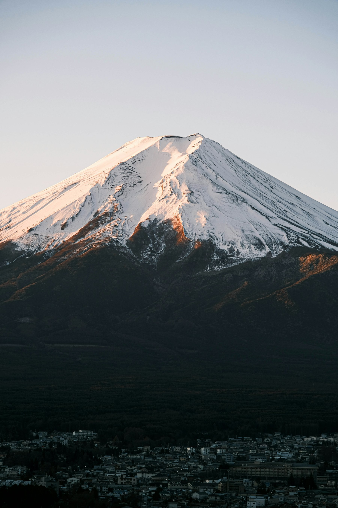
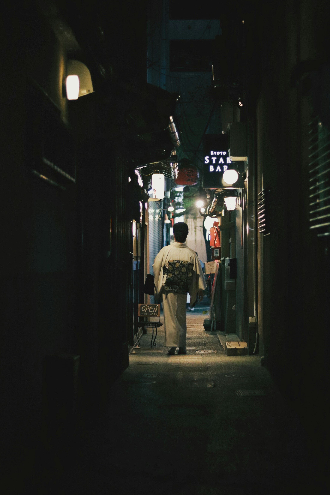

走進世界的角落
Fall into the World — journeys made only for you
Scroll · 入場
The World · 此刻位置
Chapter 01 · Japan
JAPAN日 本
楓與鳥居、湯煙與石徑——四季在京都的巷弄裡各自成篇。

5 Days · Private
富士山登頂 5 日
每人 NT$ 68,800 起

6 Days · Private
京都紅葉深度 6 日
每人 NT$ 72,000 起

8 Days · Private
北海道 冰雪之旅 8 日
流冰・星野・三大冬祭
The World · 此刻位置